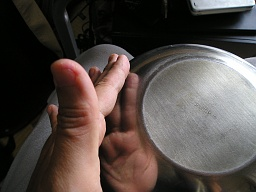
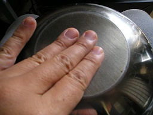
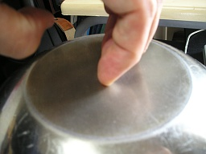
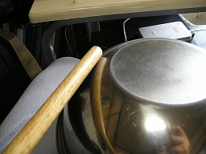
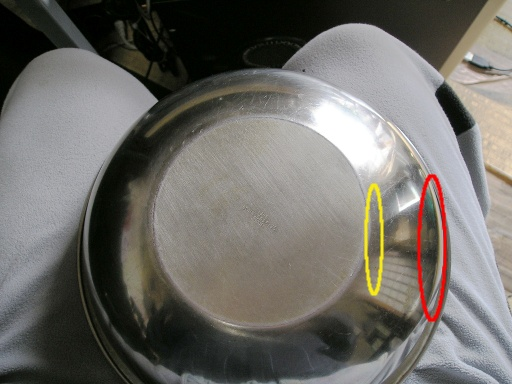

2012 年
04 月 10 日 ( 火 )
諸君！！新しい民族楽器を入手したぞ！！しかも打楽器だ！！まずは音を聴いてくれたまえ！！演奏技術のことは気にするな！！それと Web カメラで録音したので音がアレだったり、リミッターが自動でかかってるのも気にするな！！
こっちは高音がきついので音量注意だ。
この楽器の演奏の仕方だが、手で叩く方法とバチで叩く方法の二種類がある。さっきの一つ目の音がこの楽器を手で叩いている音だ。二つ目がバチを買うお金がなかったのでドラムスティックで叩いた音だ。
まず手で叩く方法をみてみよう。
楽器の側面を叩くことで、豊かな低音を得ることができる。

楽器の上面を叩く方法には三つの方法がある。一つ目は親指で叩く方法だ。

これだと、この楽器専用のスタンドがなくても片手で演奏することができる。持ち運ぶ機材が多くスタンドを持ち運ぶのが困難であったり、この楽器を槍ヶ岳の山頂に持っていって演奏するような場合に便利だ。
もう一つは普通のパーカッション同様に指の腹で鳴らす方法だ。この場合、指が楽器に触れる時間を短くすることで、豊かなサスティーンを得ることができる。

もう少し高音が欲しいときは爪で楽器を鳴らすとよい。

この楽器がおもしろいのは手で演奏する時と、バチを使って演奏する時とでまったく楽器の特性が変ってしまうことだ。
手で演奏する時に低音を出そうとすると側面を叩く必要があった。しかしバチを使って演奏する時に低音を出す時には、手の場合とは逆に上面を叩く必要がある。

バチで側面を叩くと、上面を叩くよりやや落ち着いた音になる。

なおサスティーンであるが、下の写真のやや楽器の中央寄りの黄色いところを叩いたほうが、楽器の端の赤いところを叩くより豊かなサスティーンが得られる傾向にある。

下の写真は私がこの楽器を手で演奏しているところだ。

次の写真は私がこの楽器をドラムスティックで演奏しているところだ。

この楽器は実に多彩なサウンドを得ることができる。
この偉大な楽器 "ボール" を生み出した専業主夫という民族にわたしは敬意を表したい。
まぁ、これは当然ネタなんですが ※1、ボールは半球状なのでそれなりに鳴るんじゃないかとためしてみました。Hapi Drum みたいにトングを入れればスケールも表現できるんじゃなどと妄想しています。グラインダーを持っている人ならやっちゃいそう。100 均でボールなんて手に入るしwww
※1 エイプリールフールネタにとっておけばよかったですかね。でもそうなると 1 年後ですしおすし。